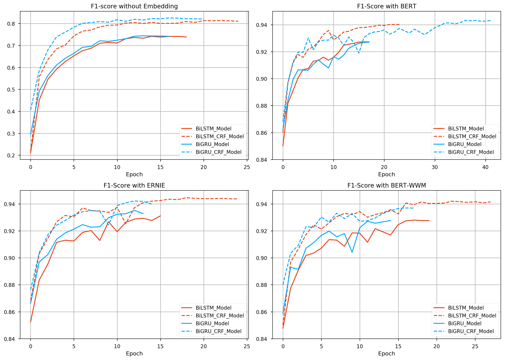

文本标注#
Kashgari 提供了一系列的文本分类模型。所有的文本标注模型都继承自 BaseLabelingModel 类，提供了同样的 API。所以切换模型做实验非常的方便。
Available Models#
| Name | Info |
|---|---|
| CNN_LSTM_Model | |
| BiLSTM_Model | |
| BiLSTM_CRF_Model | |
| BiGRU_Model | |
| BiGRU_CRF_Model |
训练命名实体识别模型#
Kashgari 内置了人民日报命名实体识别和 CONLL 2003 实体识别数据集，方便快速实验。
加载内置数据集
# 加载内置数据集
## 中文数据集
from kashgari.corpus import ChineseDailyNerCorpus
train_x, train_y = ChineseDailyNerCorpus.load_data('train')
valid_x, valid_y = ChineseDailyNerCorpus.load_data('valid')
test_x, test_y = ChineseDailyNerCorpus.load_data('test')
## 英文数据集
from kashgari.corpus import CONLL2003ENCorpus
train_x, train_y = CONLL2003ENCorpus.load_data('train')
valid_x, valid_y = CONLL2003ENCorpus.load_data('valid')
test_x, test_y = CONLL2003ENCorpus.load_data('test')
# 也可以使用自己的数据集
train_x = [['Hello', 'world'], ['Hello', 'Kashgari'], ['I', 'love', 'Beijing']]
train_y = [['O', 'O'], ['O', 'B-PER'], ['O', 'B-LOC']]
valid_x, valid_y = train_x, train_y
test_x, test_x = train_x, train_y
除了使用内置数据集，你也可以加载自己的数据集，数据格式和内置数据集一样即可，建议按照 BIO 规范进行标注。内置数据集格式如下：
>>> print(train_x[0])
['海', '钓', '比', '赛', '地', '点', '在', '厦', '门', '与', '金', '门', '之', '间', '的', '海', '域', '。']
>>> print(train_y[0])
['O', 'O', 'O', 'O', 'O', 'O', 'O', 'B-LOC', 'I-LOC', 'O', 'B-LOC', 'I-LOC', 'O', 'O', 'O', 'O', 'O', 'O']
数据准备好了，就可以开始训练模型了。所有的标注模型提供相同的 API，所以替换模型架构非常方便。
import kashgari
from kashgari.tasks.labeling import BLSTMModel
model = BLSTMModel()
model.fit(train_x, train_y, valid_x, valid_y)
# 验证模型，此方法将打印出详细的验证报告
model.evaluate(test_x, test_y)
# 保存模型到 `saved_ner_model` 目录下
model.save('saved_ner_model')
# 加载保存模型
loaded_model = kashgari.utils.load_model('saved_ner_model')
# 使用模型进行预测
loaded_model.predict(test_x[:10])
使用预训练语言模型进行迁移学习#
Kashgari 内置了几种预训练语言模型处理模块，简化迁移学习流程。下面是一个使用 BERT 的例子。
import kashgari
from kashgari.tasks.labeling import BLSTMModel
from kashgari.embeddings import BERTEmbedding
bert_embed = BERTEmbedding('<PRE_TRAINED_BERT_MODEL_FOLDER>',
task=kashgari.LABELING,
sequence_length=100)
model = BLSTMModel(bert_embed)
model.fit(train_x, train_y, valid_x, valid_y)
你还可以把 BERT 替换成 WordEmbedding 或者 GPT2Embedding 等，更多请查阅 Embedding 文档
调整模型超参数#
通过模型的 get_default_hyper_parameters() 方法可以获取默认超参，将会返回一个字典。通过修改字典来修改超参列表。再使用新的超参字典初始化模型。
假设我们想把 layer_blstm 层的神经元数量调整为 32：
from kashgari.tasks.labeling import BLSTMModel
hyper = BLSTMModel.get_default_hyper_parameters()
print(hyper)
# {'layer_blstm': {'units': 128, 'return_sequences': True}, 'layer_dropout': {'rate': 0.4}, 'layer_time_distributed': {}, 'layer_activation': {'activation': 'softmax'}}
hyper['layer_blstm']['units'] = 32
model = BLSTMModel(hyper_parameters=hyper)
使用训练回调#
Kashgari 是基于 tf.keras, 所以你可以直接使用全部的 tf.keras 回调类，例如我们使用 TensorBoard 可视化训练过程。
from tensorflow.python import keras
from kashgari.tasks.labeling import BLSTMModel
from kashgari.callbacks import EvalCallBack
model = BLSTMModel()
tf_board_callback = keras.callbacks.TensorBoard(log_dir='./logs', update_freq=1000)
# 这是 Kashgari 内置回调函数，会在训练过程计算精确度，召回率和 F1
eval_callback = EvalCallBack(kash_model=model,
valid_x=valid_x,
valid_y=valid_y,
step=5)
model.fit(train_x,
train_y,
valid_x,
valid_y,
batch_size=100,
callbacks=[eval_callback, tf_board_callback])
自定义模型结构#
除了内置模型以外，还可以很方便的自定义自己的模型结构。只需要继承 BaseLabelingModel 对象，然后实现get_default_hyper_parameters() 方法
和 build_model_arc() 方法。
from typing import Dict, Any
from tensorflow import keras
from kashgari.tasks.labeling.base_model import BaseLabelingModel
from kashgari.layers import L
import logging
logging.basicConfig(level='DEBUG')
class DoubleBLSTMModel(BaseLabelingModel):
"""Bidirectional LSTM Sequence Labeling Model"""
@classmethod
def get_default_hyper_parameters(cls) -> Dict[str, Dict[str, Any]]:
"""
Get hyper parameters of model
Returns:
hyper parameters dict
"""
return {
'layer_blstm1': {
'units': 128,
'return_sequences': True
},
'layer_blstm2': {
'units': 128,
'return_sequences': True
},
'layer_dropout': {
'rate': 0.4
},
'layer_time_distributed': {},
'layer_activation': {
'activation': 'softmax'
}
}
def build_model_arc(self):
"""
build model architectural
"""
# 此处作用是从上层拿到输出张量形状和 Embedding 层的输出
output_dim = len(self.pre_processor.label2idx)
config = self.hyper_parameters
embed_model = self.embedding.embed_model
# 定义你自己的层
layer_blstm1 = L.Bidirectional(L.LSTM(**config['layer_blstm1']),
name='layer_blstm1')
layer_blstm2 = L.Bidirectional(L.LSTM(**config['layer_blstm2']),
name='layer_blstm2')
layer_dropout = L.Dropout(**config['layer_dropout'],
name='layer_dropout')
layer_time_distributed = L.TimeDistributed(L.Dense(output_dim,
**config['layer_time_distributed']),
name='layer_time_distributed')
layer_activation = L.Activation(**config['layer_activation'])
# 定义数据流
tensor = layer_blstm1(embed_model.output)
tensor = layer_blstm2(tensor)
tensor = layer_dropout(tensor)
tensor = layer_time_distributed(tensor)
output_tensor = layer_activation(tensor)
# 初始化模型
self.tf_model = keras.Model(embed_model.inputs, output_tensor)
# 此模型可以和任何一个 Embedding 组合使用
model = DoubleBLSTMModel()
model.fit(train_x, train_y, valid_x, valid_y)
使用 CuDNN 加速 GPU 训练#
Kashgari 可以使用 CuDNN 层来加速训练。CuDNNLSTM 和 CuDNNGRU 训练速度比 LSTM 和 GRU 快很多，但是只能在 GPU 上使用。如果需要 GPU 训练，CPU 推断，那么不能使用 CuDNN 来加速训练。设置 CuDNN 方法如下：
kashgari.config.use_cudnn_cell = True
Performance report#
Available model list, matrics based on this training:
- corpus: ChineseDailyNerCorpus
- epochs: 50 epochs with callbacks
- batch_size: 64
- T4 GPU / 2 CPU / 30 GB on openbayes
- colab link
early_stop = keras.callbacks.EarlyStopping(patience=10)
reduse_lr_callback = keras.callbacks.ReduceLROnPlateau(factor=0.1, patience=5)
| Name | Embedding | F1 Score | Epoch Time | Non Trainable params | Trainable params |
|---|---|---|---|---|---|
| BiLSTM_Model | Random Init | 0.74147 | 9.5s | 0 | 558176 |
| BiLSTMCRFModel | Random Init | 0.81378 | 123.0s | 0 | 573168 |
| BiGRU_Model | Random Init | 0.74375 | 9.7s | 0 | 499296 |
| BiGRUCRFModel | Random Init | 0.82516 | 120.7s | 0 | 514288 |
| BiLSTM_Model | BERT | 0.92727 | 183.0s | 101360640 | 3280904 |
| BiLSTMCRFModel | BERT | 0.94013 | 265.0s | 101360640 | 3295896 |
| BiGRU_Model | BERT | 0.92700 | 180.4s | 101360640 | 2461192 |
| BiGRUCRFModel | BERT | 0.94319 | 263.4s | 101360640 | 2476184 |
| BiLSTM_Model | ERNIE | 0.93109 | 167.6s | 98958336 | 3280904 |
| BiLSTMCRFModel | ERNIE | 0.94460 | 250.6s | 98958336 | 3295896 |
| BiGRU_Model | ERNIE | 0.93512 | 165.7s | 98958336 | 2461192 |
| BiGRUCRFModel | ERNIE | 0.94218 | 250.4s | 98958336 | 2476184 |
